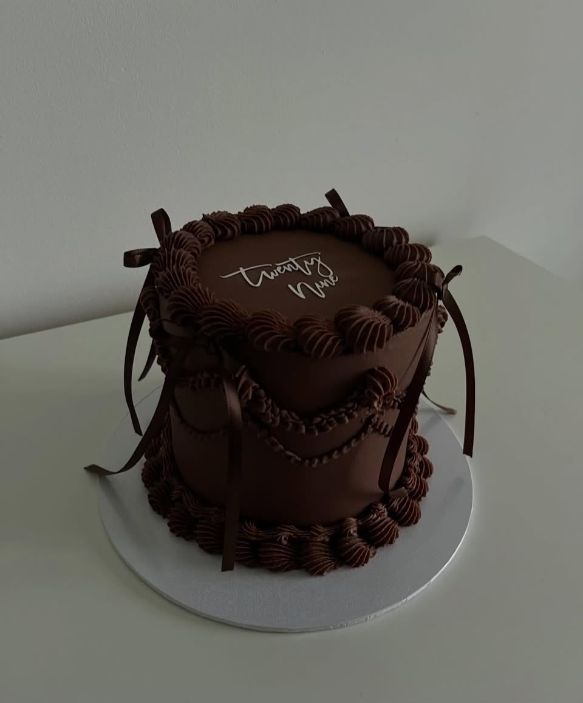

About Sweet Crumbs Bakery

Welcome to Sweet Crumbs Bakery, a local bakery dedicated to creating fresh, delicious and beautifully presented baked goods for our customers.
We believe every celebration deserves something special. From a simple cupcake to a carefully designed celebration cake, we put care and attention into every order.
Our Story
Sweet Crumbs Bakery was created from a love of baking and a passion for bringing people together through delicious food. What started as a small baking idea has grown into a bakery providing cakes, cupcakes and other baked treats for different occasions.
Our Mission
Our mission is to provide high-quality, freshly baked products while delivering friendly and reliable customer service.
Our Vision
Our vision is to become a trusted bakery known for delicious products, creative designs and excellent customer service.
Our Values
- Quality: Fresh and high-quality baked products.
- Creativity: Unique and personalised cake designs.
- Customer Service: Listening to customers and meeting their needs.
- Freshness: Products prepared with care.
- Reliability: Accurate and timely orders.
What Makes Us Special?
Cakes and baked treats are part of birthdays, weddings, family gatherings, celebrations and important memories. We take time to understand what each customer wants and are happy to help with specific designs or event requirements.
Serving Our Customers
We cater for individuals, families, schools, offices, parties and other events. Customers can contact us to discuss requirements, request a quotation or place a special order.